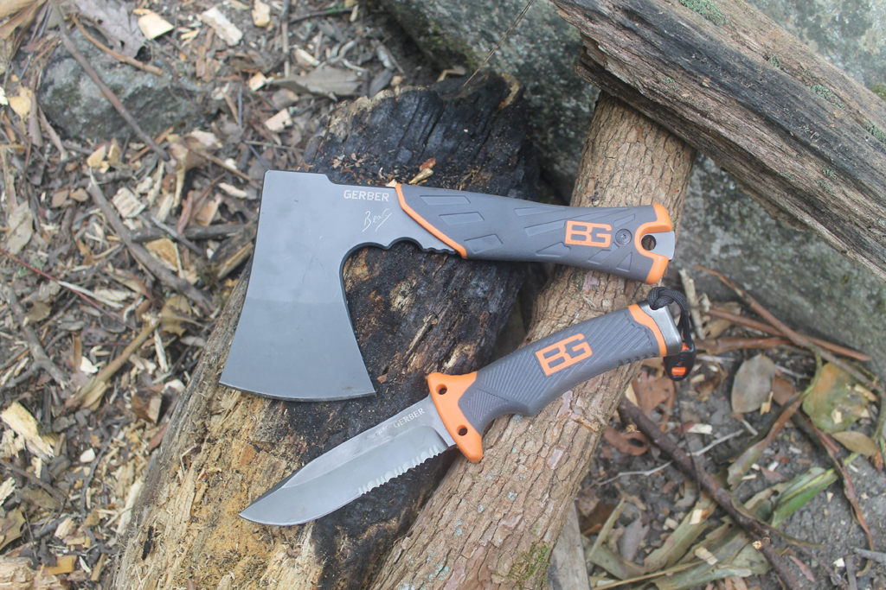

Η παρούσα ιστοσελίδα προσφέρει σε όποιον αγαπάει τα ταξίδια, τη φύση, την περιπέτεια ή έχει βρεθεί χωρίς τη θέλησή του σε μια επικίνδυνη κατάσταση, όλες τις απαραίτητες συμβουλές και πληροφορίες σχετικά με:
- τον κατάλληλο εξοπλισμό για μονοήμερες και πολυήμερες εξορμήσεις.
- τους τρόπους ανεύρεσης καταφυγίου, νερού και τροφής στην άγρια φύση.
- τον προσανατολισμό με χάρτες, πυξίδα και τη βοήθεια του έναστρου ουρανού.
- τους τρόπους επικοινωνίας και τις τεχνικές διάσωσης.
- τις πρώτες βοήθειες για την αντιμετώπιση ατυχημάτων ή έκτακτων περιστατικών.
- την κατασκευή καταφυγίων, το άναμμα φωτιάς, την αναζήτηση νερού και τροφής, τις μετακινήσεις και τις ενέργειες διάσωσης.
Πριν από χιλιάδες χρόνια οι άνθρωποι με την εμφάνιση τους στη γη ήταν απολίτιστοι. Ζούσαν με φυσικό τρόπο, κοντά στην φύση. Ήταν εκτεθειμένοι και απροστάτευτοι σε όλα τα φυσικά σε όλα τα φυσικά φαινόμενα και στον ανταγωνισμό με τα ζώα του περιβάλλοντος.
Για την αντιμετώπιση των διαφόρων καταστάσεων, που καθημερινά παρουσιάζονταν, αντιδρούσαν ενστικτωδώς. Δεν υπήρχαν οι γνώσεις που καθιερώνουν τους ανάλογους τρόπους αντιμετώπισης σε κάθε περίπτωση. Σχολείο μοναδικό ήταν η φύση με τα φαινόμενα της, τα φυτά και τα ζώα της. Έτσι ο άνθρωπος αποκτούσε εμπειρίες καθημερινά παρακολουθώντας τις αντιδράσεις των ζωντανών οργανισμών του φυσικού του περιβάλλοντος και προικισμένος και ο ίδιος με τα ένστικτα του προσαρμόζονταν. Έμαθε να βρίσκει την τροφή του με το κυνήγι και επειδή δεν ήταν προικισμένος με τις ικανότητες των σαρκοφάγων ζώων και πτηνών αναγκάστηκε να επινοήσει τα ανάλογα μέσα υποτυπώδη όπλα τότε. Αντιμετώπιζε τις καιρικές συνθήκες, όπως τα ζώα, χρησιμοποιώντας τις σπηλιές, φορώντας το δέρμα των ζώων που σκότωνε, ανεβαίνοντας στα δέντρα και αργότερα φτιάχνοντας οικισμούς σε ασφαλή μέρα.
Από τα παραπάνω βγαίνει το συμπέρασμα, ότι ο μεγάλος δάσκαλος του ανθρώπου ήταν και παραμένει η φύση. Μπορεί ο σημερινός άνθρωπος να έχει απομακρυνθεί από αυτήν, αλλά διέπραξε φοβερά λάθη διαταράσσοντας το φυσικό του περιβάλλον. Παρά την τεράστια εξέλιξη του πολιτισμού του, όπου αγνόησε την φύση και έκανε λάθη που τα πληρώνει το ανθρώπινο γένος με την υγεία του. Για αυτό πρέπει να σεβόμαστε την φύση και να είμαστε προσεκτικοί ώστε κάθε εφεύρεση του να μην διαταράσσει και να μην βλάπτει τον μεγάλο δάσκαλο μας, την φύση.
Τι είναι όμως επιβίωση; Επιβίωση είναι το να μένεις ζωντανός κάτω από οποιεσδήποτε συνθήκες, οπουδήποτε στον κόσμο. Πως το καταφέρνουμε αυτό; Χρησιμοποιώντας τεχνικές οι οποίες είναι εύκολες στην υλοποίηση και μπορούν να εφαρμοστούν από όλα τα άτομα ανεξαρτήτως ηλικίας, φύλου και σωματικής διάπλασης. Οι τεχνικές επιβίωσης είναι θέμα απλής λογικής που απαιτεί ελάχιστη ποσότητα εφοδίων, πολλά από τα οποία μπορούμε να τα κατασκευάσουμε πρόχειρα από κατεστραμμένα υλικά ή να τα βρούμε στο φυσικό περιβάλλον. Ακριβώς επειδή όλοι ίσως τύχει να έρθουμε σε περίπτωση ανάγκης, καλό είναι να γνωρίζουμε τι θα πρέπει να κάνουμε σε συγκεκριμένες καταστάσεις και συνθήκες. Όσο μεγαλύτερη η γνώση που έχουμε, τόσο μεγαλύτερη και η αυτοπεποίθηση μας στο πώς να χειριστούμε τέτοιες καταστάσεις.
Όταν κάποιος βρίσκεται στην φύση ότι εφόδιο έχει μαζί του θεωρείται χρήσιμο. Επίσης, θα πρέπει να γνωρίζουμε τι μπορούμε να πάρουμε από την φύση και με ποιο τρόπο να το χρησιμοποιούμε τέλεια.
Η επιβίωση έχει έναν απλό κανόνα: κάθε προσπάθεια ή ενέργεια μας πρέπει να εναρμονίζεται μάλλον με την φύση παρά να προσπαθούμε να προσαρμόσουμε την φύση στις ανάγκες της σύγχρονης αστικής ζωής. Γιατί π.χ. να κατασκευάσουμε ένα καταφύγιο, αν δεν κάνει κρύο και η πιθανότητα για βροχή είναι μηδαμινή; Γιατί να μεταφέρουμε νερό όταν περιβαλλόμαστε από λίμνες και ποτάμια; Τα ζώα δεν διαθέτουν εργαλεία, παρόλα αυτά, φτιάχνουν τις φώλιες τους και βρίσκουν τροφή και νερό για να επιβιώσουν.
Τέλος, το πιο σημαντικό που θα πρέπει να γνωρίζουμε είναι ότι στην μάχη για επιβίωση τον πιο καθοριστικό παράγοντα επιτυχίας παίζει η ΘΕΛΗΣΗ για ζωή και η ΠΙΣΤΗ στον εαυτό μας.